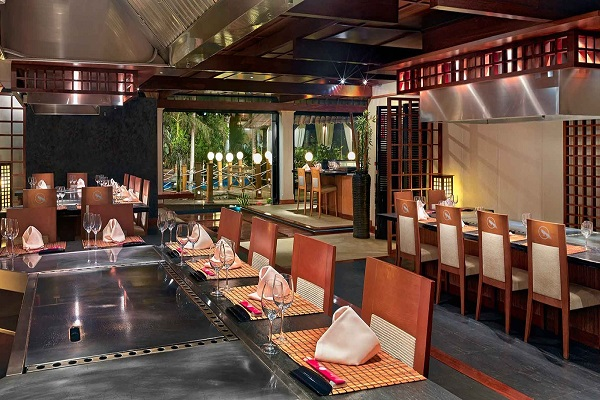
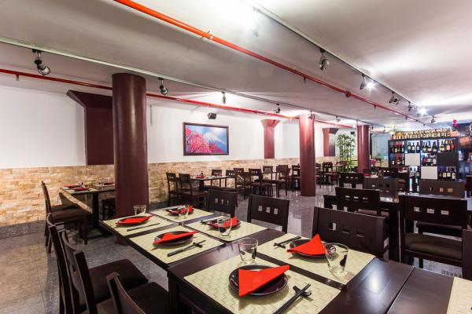
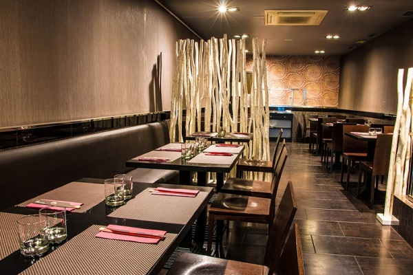
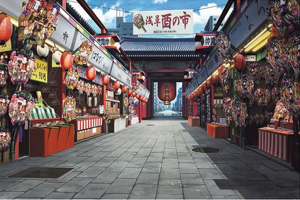
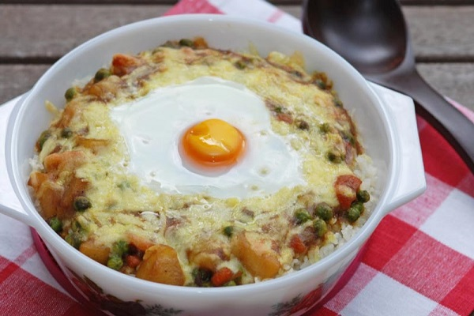

Come auténtica comida japonesa en un ambiente familiar y agradable.

Nuestro restaurante Uno de nuestros salones

Amplios salonesPerfectos para comidas familiares

Salones tranquilos Ideales para reuniones de cualquier tipo
Yukihiro Takahashi Cocinero especialista en sushiMichel Tsukimoto Cocinero cuya especialidad son las salsas japonesasMamoru MikotoSe encarga de asegurarse de que las representaciones de los platos son realesKobe Ingredientes traidos directamente desde KobeTokyoLa capital del país nipón se encarga de mostrarnos su cultura y costumbres

Asakusa Captamos la esencia de cada barrio de Japón para retransmitirla en nuestros platos

Los mejores platos Con el auténtico sabor de JapónUna réplica exacta Al alcance de tu manoPreparaciones caseras Para satisfacer todos tus deseos culinarios